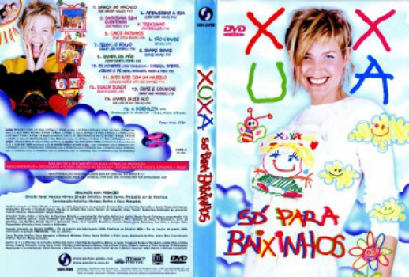

Xuxa Só Para Baixinhos (2000)


Avaliação (TMDb):


6.8/10 (10 votos)
Avaliação (Usuário):
País:Portugal,
Idiomas falados:Português
Gênero(s):Música
Diretor(s):
Codec:MPEG-2 (DVD)
Número: 2472
Sinopse:
Direcionado ao público infantil, contêm videoclipes com canções legendadas, voltados para entretenimento e desenvolvimento educacional das crianças de 0 a 14 anos. Faixas: Dança do Macaco, Atravessar a Rua, Batatinha Bem Quentinha, Trenzinho, Cinco Patinhos, Tão Grande, Teddy, O Polvo, Shake Shake, Rampa Pa Mão, Os Números / Cabeça, Ombro, Joelho e Pé, Guto Bate Com Um Martelo, Quack Quack, Grite e Cochiche, Vamos Dizer Alô, A Borboleta
Elenco:
Xuxa
Tipo de mídia: DVD5,
Legendas: Inglês, Espanhol, Português
Alugado: Não
Tela: 16:9 Widescreen